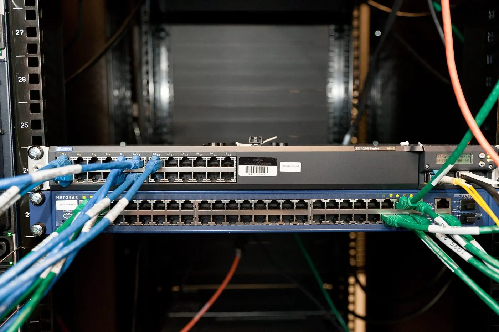

Tecnologia sob medida para o seu negócio crescer.
Sistemas, aplicativos e inteligência artificial que automatizam o que hoje é manual.
Prefere outro canal? E-mail · Agendar reunião

O problema
Planilhas espalhadas, tarefas repetitivas, sistemas que não conversam entre si e decisões tomadas sem dados.
O que fazemos



Software sob demanda
Sistemas desenvolvidos para o jeito que a sua empresa trabalha.
Aplicativos
Soluções para celular e computador, para sua equipe ou seus clientes.
Sites
Presença profissional na internet, pronta para atrair e converter clientes.
Integrações
Seus sistemas e ferramentas trocando informações automaticamente.
Inteligência artificial
Automação de processos e análise de dados.
Atendimento com IA
Chatbots e agentes que atendem seus clientes no WhatsApp e no site, a qualquer hora.